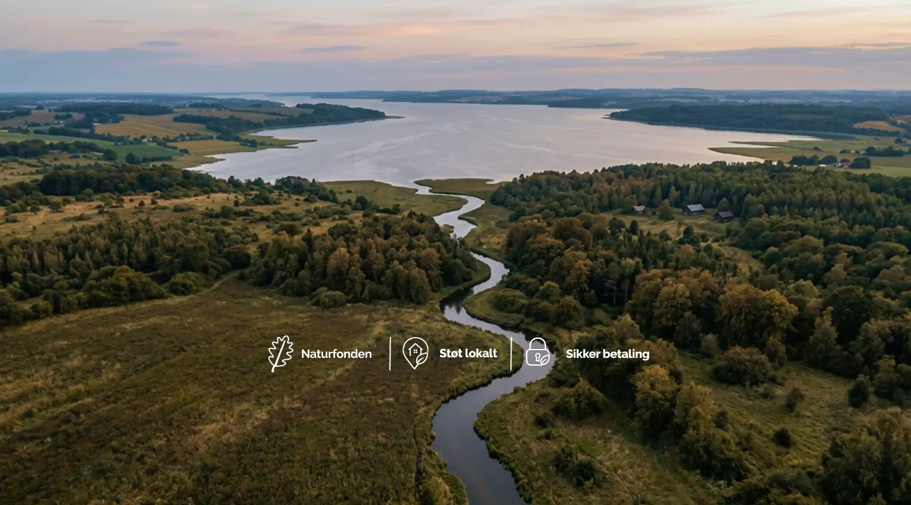
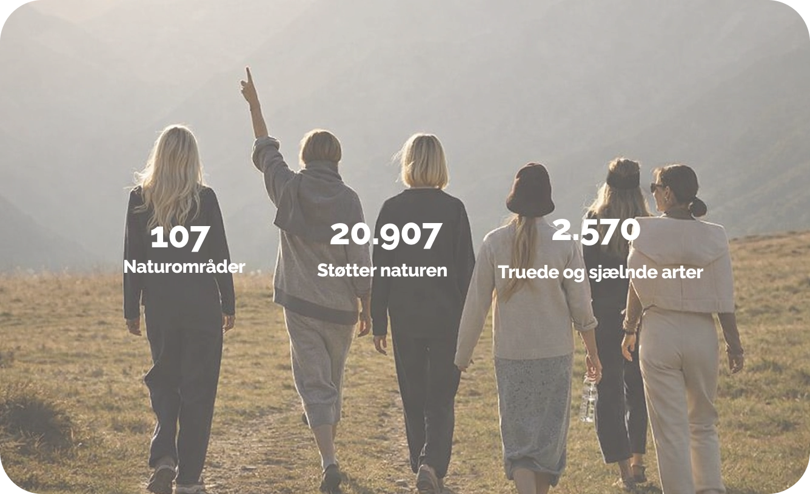

“Vi køber, beskytter og genopretter natur i hele Danmark - vi sikre naturen for altid og unikke naturoplevelser til alle.”
Dankort Øremærket er en ordning, der gør det muligt at støtte velgørende formål gennem dine daglige betalinger. Ordningen er skabt for at gøre det nemt og tilgængeligt at bidrage.
Du skal ikke selv aktivt overføre penge eller tage stilling ved hver betaling - det sker helt automatisk i baggrunden.

Dankort donerer
1 øre
Din bank donerer
1 øre
Dem du handler hos
donerer 1 øre
Endnu mere dansk natur

Dankort Øremærket er et initiativ fra Dankort, der har til formål at styrke den danske vilde natur.
Det gælder alle køb - både i butikker, online og via digitale wallets, så man bidrager automatisk, hver gang man betaler.
Se hvordan du gørHver gang du betaler med Dankort, går der automatisk en donation til Den Danske Naturfond - uanset om du bruger kortet, mobilen eller handler online.
Det tager kun et øjeblik at tjekke, om du faktisk betaler med Dankort: kig efter Dankort-logoet på dit fysiske kort eller i din mobile wallet.
Sådan får du dankort på Apple PayNej, det er ikke dine penge, der doneres. Det er Dankort, der donerer 1 øre pr. transaktion til Den Danske Naturfond. Det samme gør de partnervirksomheder, der er med i samarbejdet.
Nej, de ønsker ikke at opfordre til merforbrug. Deres andel i samarbejdet med Dankort er, at de modtager en øre, når du alligevel betaler med dit Dankort.
De gavner klimaet ved for eksempel at konvertere landbrugsjord til natur og udtage såkaldte lavbundsjorde. De genopretter og beskytter natur, som kan hjælpe klimaet.
For langt de fleste butikker i Danmark er det billigere, når deres kunder betaler med Dankort fremfor med andre kort.